every month
A rose.
A different colour. A different surprise. And somehow, you still manage to catch me off guard every time.
a tiny website for my favourite person
13 years ago, I met my best friend.
1 year ago, I found my person.
Turns out...
01 — how we got here
13 years ago
Somewhere along the way
Then you told me the truth.
And I said...
...great decision-making on my part.
Less than two months later...
You were right.
Some things just take a little time to figure out.
02 — my favourite kind of love
The things you probably don't even realise I keep in my heart.
every month
A different colour. A different surprise. And somehow, you still manage to catch me off guard every time.
my favourite habit
On the couch. While we're walking. Even when you're driving. Like being close is simply our default setting.
personal space?
Holding hands. Cuddling. Sitting way too close. Being ridiculously clingy... exactly the way I like us.
one of my favourites
You don't only believe in the person I am. You make room for the person I'm trying to become.
03 — one moment I'll never forget
I don't think it felt like a first kiss.
It felt like we'd been waiting for each other for years.
Like somehow, after all that time, our souls already knew exactly where they belonged.
04 — you believed in me
Because this little website means more than just an anniversary gift.
us.py
boyfriend = "Daçuli"
best_friend = boyfriend
safe_place = boyfriend
home = boyfriend
if boyfriend.believes_in(me):
me.keep_going()
# And one day...
me.become("developer")05 — our soundtrack
I think it would sound a little like this.
Elvis Presley
Aurela Gaçe
Ultimo
the one you sang for me ♥
Vedat Ademi
Konstantinos Argiros
now that I found you, I'm not letting you go. ♥
James Arthur
Stephen Sanchez
some feelings are easier to play than to explain.
06 — 365 days of us
Some big. Some small.
All of them better because they were with you.
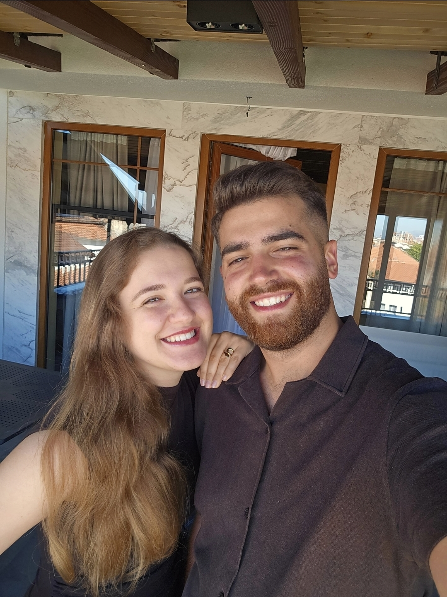
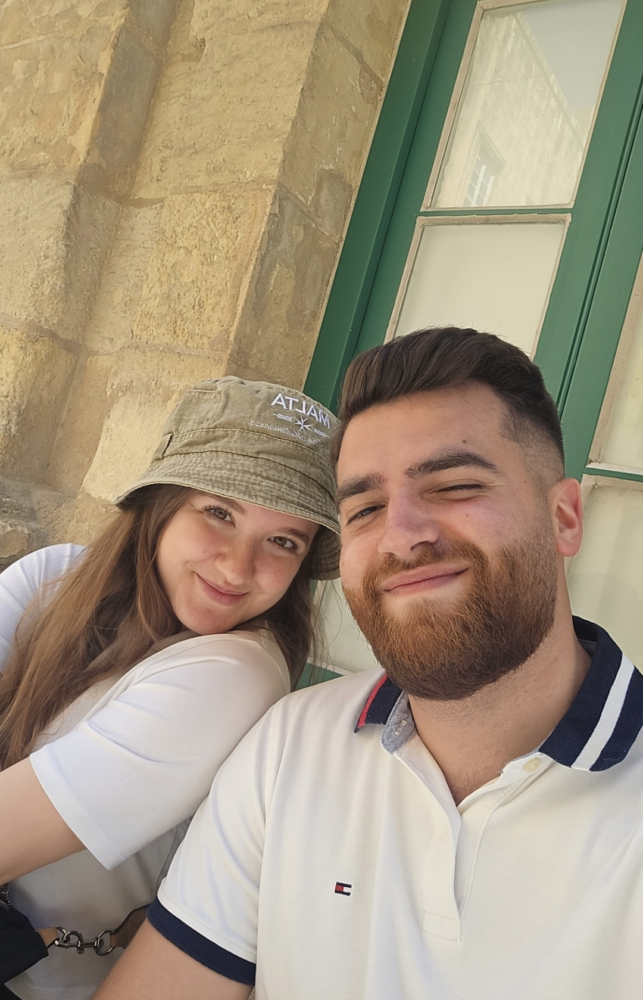
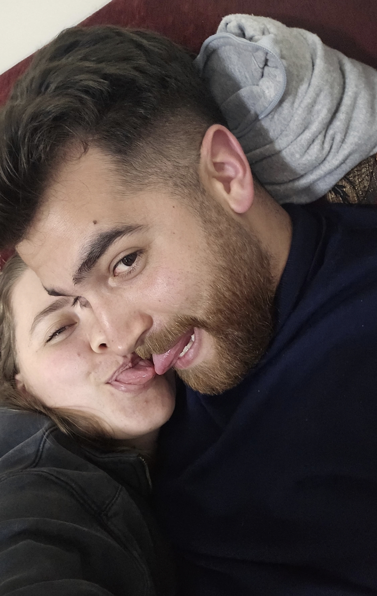
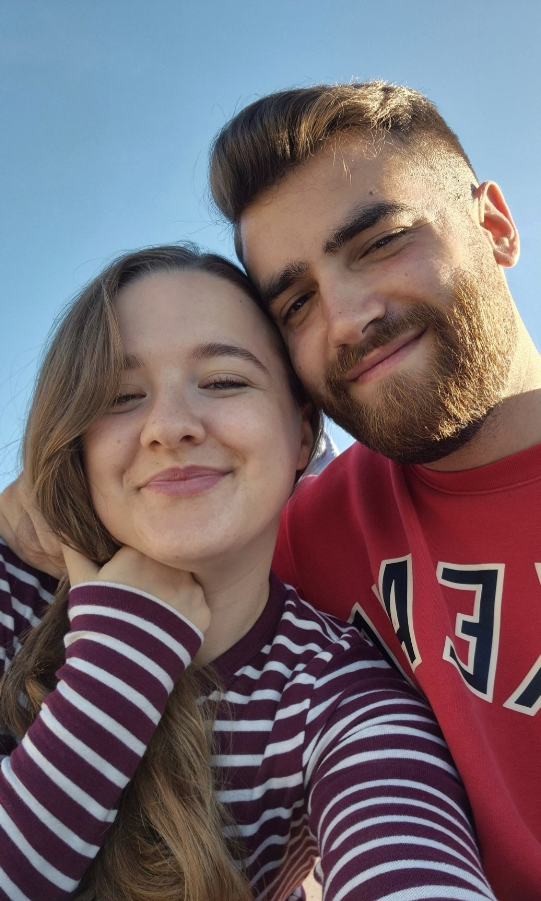
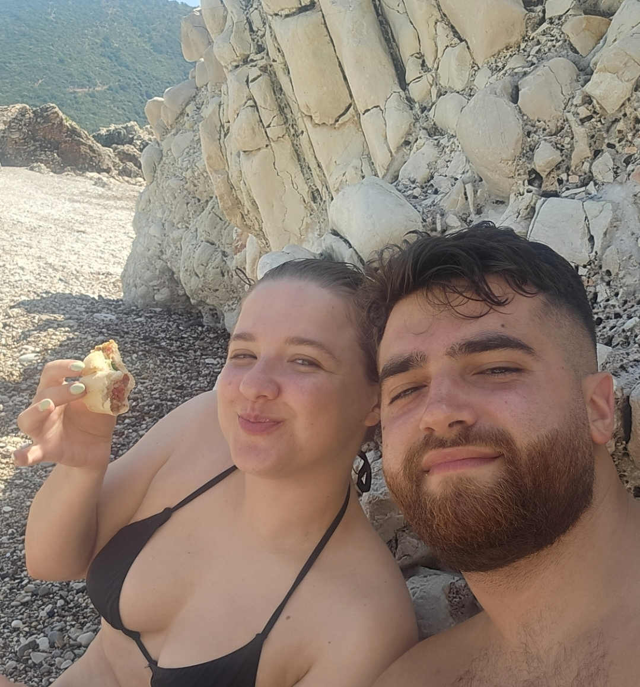
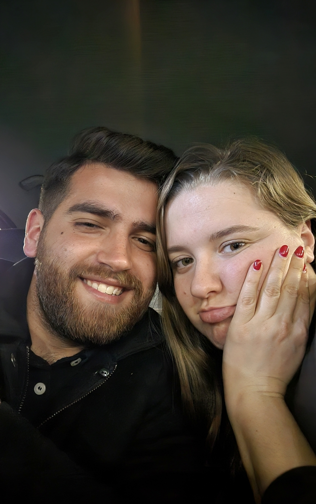
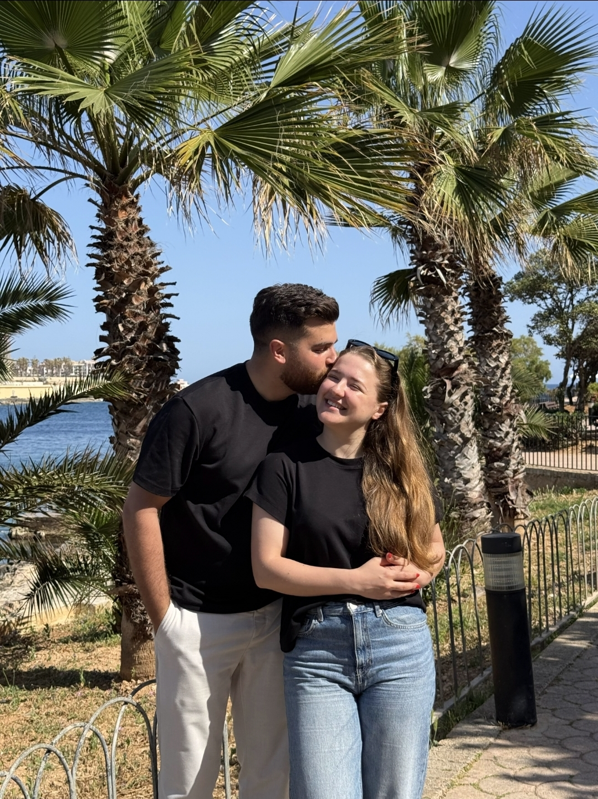
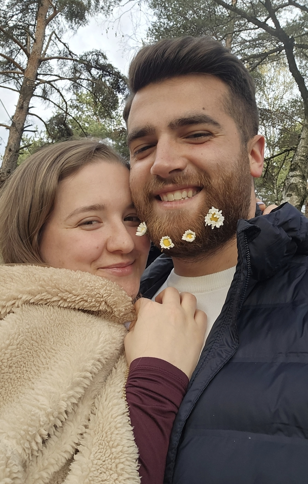
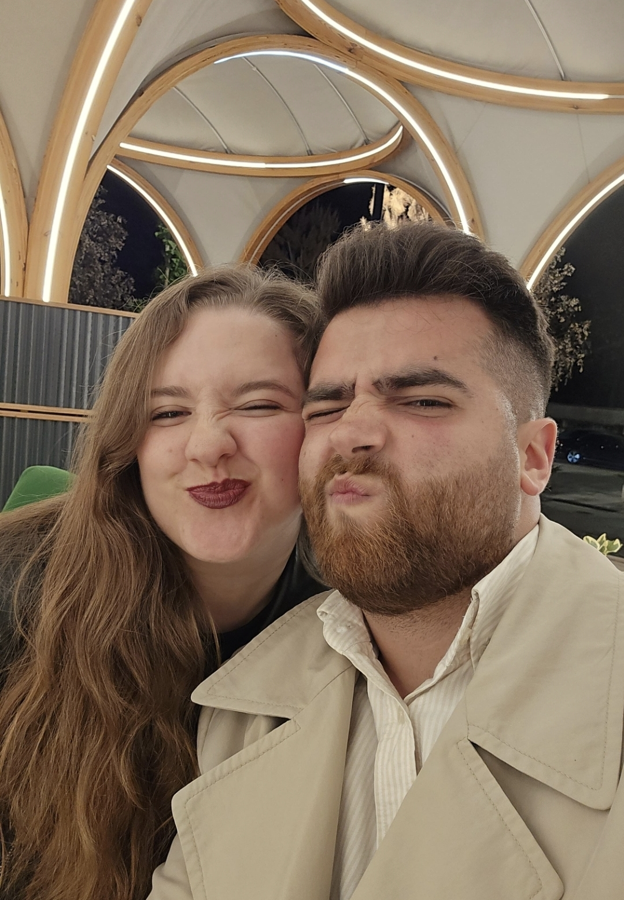
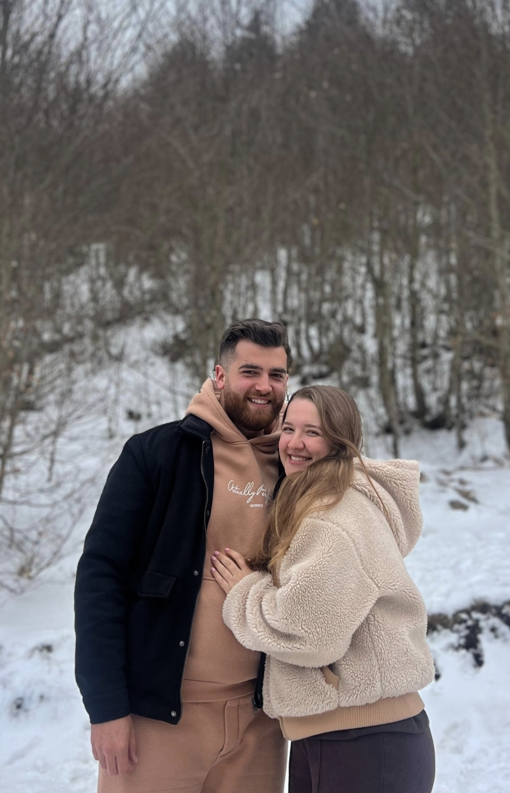
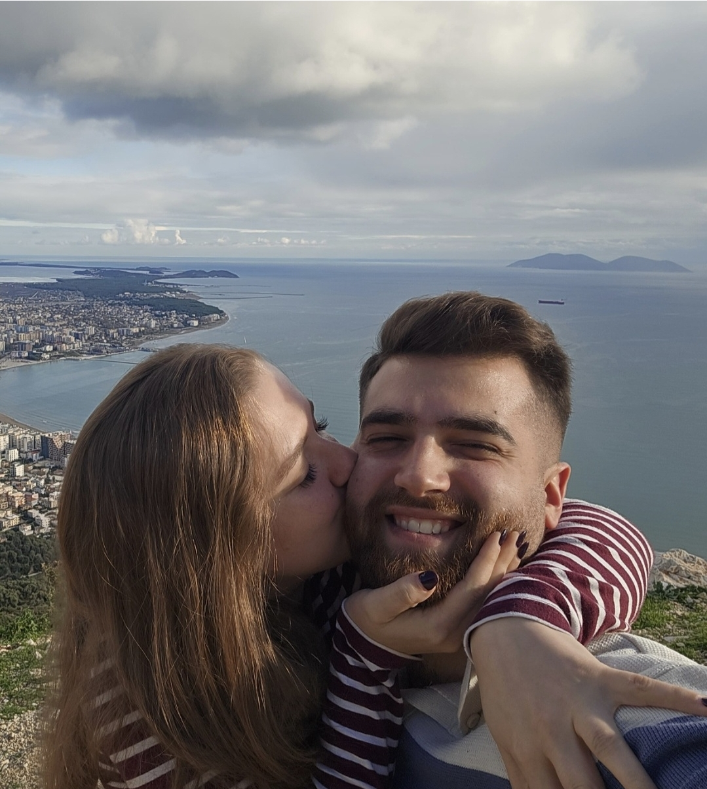
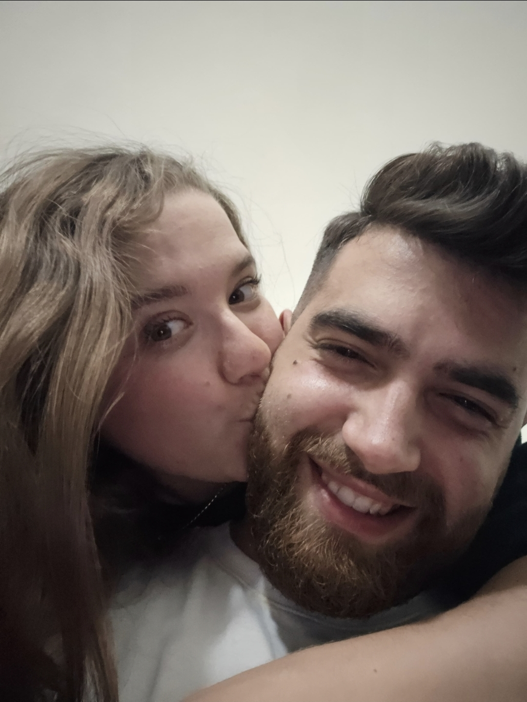
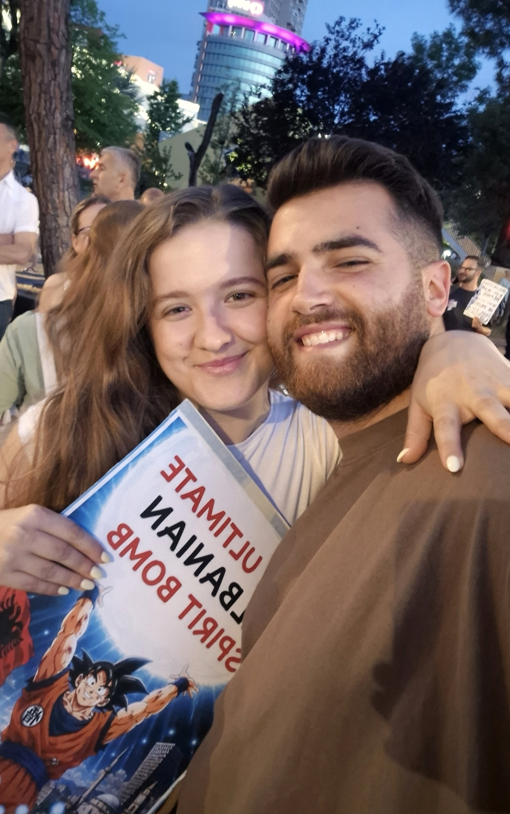
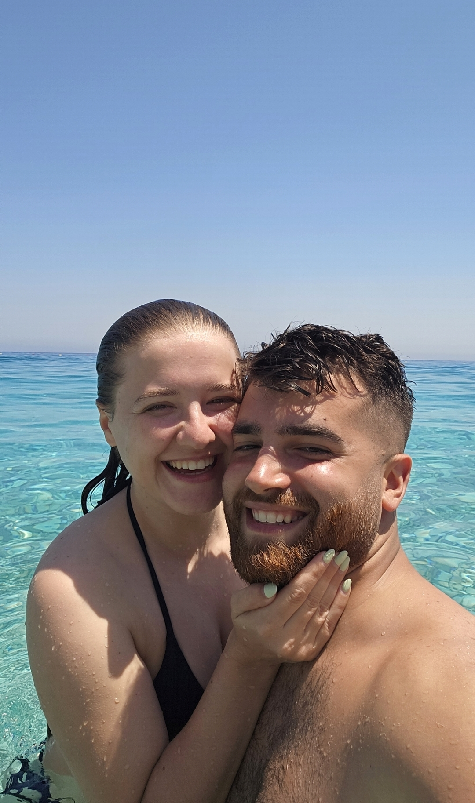
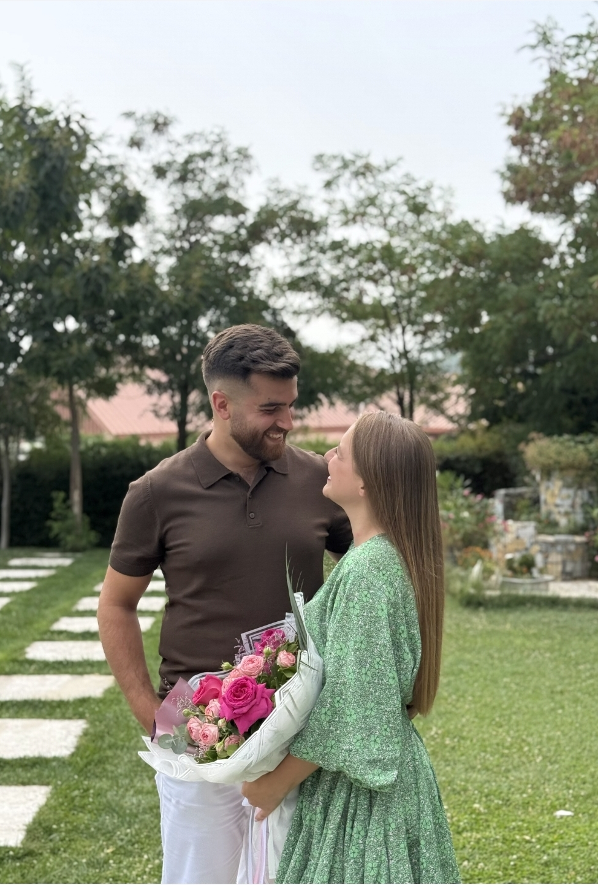
01 / 16
different days. same you.
and that's my favourite part.
365 days later...
07 — for you
Daçulia ime,
Një vit më parë, nuk e dija ende sa shumë do ta doja jetën time me ty në të.
Sot, ti je njeriu që dua t'i tregoj çdo gjë. Ai që dua pranë kur jam e lumtur, kur jam e lodhur, kur kam frikë, kur kam një ide të re, kur kam nevojë për një përqafim… dhe madje edhe kur duhet të ulem e të mësoj dhe nuk kam pikën e dëshirës.
Faleminderit që më do kaq butë, kaq ëmbël, kaq paqtë. Që më mban dorën sikur është vendi më normal në botë për dorën tënde. Që çdo muaj më surprizon me një trëndafil tjetër. Që më përqafon, më duron, më motivon, më bën të qesh dhe më kujton vazhdimisht se mundem.
Faleminderit që beson tek unë. Ndonjëherë edhe më shumë sesa besoj unë te vetja.
Dua ta dish sa krenare jam për ty. Sa shumë besoj tek ti, tek ëndrrat e tua dhe te gjithçka që mund të bëhesh. Dhe mbi të gjitha, sa krenare jam që jam e jotja.
Ti ke qenë shoku im më i mirë shumë përpara se të bëheshe dashuria ime. Ndoshta pikërisht për këtë, të dua në kaq shumë mënyra njëkohësisht.
Te ty kam gjetur dashurinë time, shokun tim më të mirë, njeriun tim të preferuar, vendin tim të sigurt… dhe atë personin me të cilin dua të bëj gjithçka dhe asgjë, mjafton që të jemi bashkë.
Dhe dua që edhe ti ta dish se tek unë do të kesh gjithmonë të njëjtën gjë. Dua të jem vendi ku mund të vish me çdo version tëndin. Kur gjithçka shkon mirë, por edhe kur nuk shkon. Të jem njeriu që të beson, që të mbështet, që të dëgjon, që të mban fort dhe që është gjithmonë në anën tënde.
Pas 13 vitesh që të njoh, një viti që të dua kështu… mendoj se më në fund mund ta pranoj:
Ishte ti.
Gjithmonë ke qenë ti.
Dhe nëse do të më duhej të të zgjidhja përsëri, pas gjithë këtyre ditëve, trëndafilave, përqafimeve, këngëve, të qeshurave, planeve dhe momenteve tona të vogla…
do të të zgjidhja ty.
Përsëri e përsëri.
Gëzuar një vit, Shpirtushi im. ♥
Të dua.
Megi